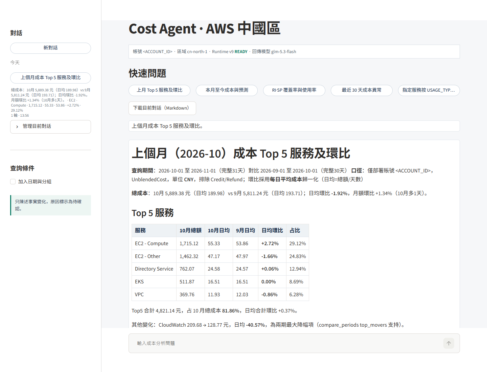

這份文件介紹一個部署在 Amazon Bedrock AgentCore（北京區）上的成本分析 Agent。使用者用中文提問，Agent 會自己決定要查哪些 Cost Explorer 數據，在沙盒裡做計算，最後回報成本變化。
中國區的 AgentCore 沒有 Memory，也不能用 Bedrock 模型，所以有兩處自建：短期記憶用 S3 存對話歷史，長期記憶用 DynamoDB 存結論；模型則改走 OpenAI 兼容的智譜 GLM API。其他部分都用 AgentCore 的托管能力。
- Runtime
- costagent-<RUNTIME_SUFFIX> · v9
- Gateway
- <GATEWAY_ID>
- MCP 工具數
- 9
- 模型
- glm-5.3-flash（智譜 Coding Plan）
- 成本 API
- ce.cn-northwest-1
- 成本口徑
- UnblendedCost
- 專案路徑
- C:\code\agentcode-ce
01 · 整體架構Agent 本身不碰成本數據，所有 CE 查詢都經過 Gateway 交給 Lambda
青綠色線是一次成本查詢的主路徑。Runtime 裡的 Agent 只負責決定查什麼、怎麼算、怎麼寫。實際呼叫 Cost Explorer 的是 Lambda，用的是 Lambda 執行角色的權限。
資料來源：專案 C:\code\agentcode-ce 的程式碼與 Kiro 的部署驗證紀錄（2026-11-20）。
02 · 用了 AgentCore 哪些部分六項能力用了五項，Memory 在中國區不提供，改為自建
中國區 AgentCore 獨立於 Bedrock 運行，能力只有 Runtime、Gateway、Identity、Code Interpreter、Browser、Observability 六項。下表列出每項在本系統中的用法，以及中國區需要特別處理的地方。
| 能力 | 狀態 | 在本系統的作用 | 中國區要注意的地方 |
|---|---|---|---|
| Runtime | 使用 | 托管 Agent 程式，提供 HTTPS 調用入口和 session 隔離。按 session_id 路由，每次請求新建一個 Agent 實例，不同使用者的對話不會串在一起。 | starter-toolkit 把端點寫死成 .amazonaws.com，部署前要導出 BEDROCK_AGENTCORE_CP/DP_ENDPOINT 改成 .amazonaws.com.cn。免 Docker 部署要加 -dt direct_code_deploy。Windows 上沒有 zip 指令，用 scripts/zip.cmd 通過檢查。 |
| Gateway | 使用 | 托管的 MCP Server。把 Lambda 登記成 target 後，自動暴露 9 個工具。Agent 不需要知道 Lambda 在哪裡。 | 北京區沒有 Cognito，入站認證改用 AWS_IAM（SigV4，service 名為 bedrock-agentcore）。工具名會被加上 CostAgentTools___ 前綴。inline schema 只接受 type、properties、required、items、description 這幾個欄位。 |
| Identity | 部分 | 只用到入站的 IAM 身份：Runtime 執行角色以 SigV4 調用 Gateway；Gateway 用 GATEWAY_IAM_ROLE 調用 Lambda。 | 沒有用 CUSTOM_JWT（需要自建 OIDC），也沒有用 Token Vault。目前的下游只有 AWS API，不需要外部 OAuth 憑證。 |
| Code Interpreter | 使用 | run_python 工具。環比、日均、佔比、排序這些計算都在托管沙盒裡跑，不讓模型心算。 | 回傳的是事件流，stdout 在 structuredContent.stdout。沙盒裡的檔案路徑必須是相對路徑。每次調用會開一個 session，用完就關。 |
| Observability | 部分 | Runtime 和 Lambda 都寫結構化 JSON 日誌（tool、duration_ms、ok、returned_model），用 Logs Insights 統計。 | direct_code_deploy 的 Runtime 不會產生 span。X-Ray / Transaction Search 因為 partition 問題（資源策略寫成 arn:aws:）沒有開。 |
| Browser | 未使用 | 目前不需要。之後可以拿來讀中國區的價格頁或文件。 | 系統瀏覽器 aws.browser.v1 可以用。 |
| Memory | 不提供 | 改用 S3 Session Manager 和 DynamoDB 自建，見下一節。 | 部署時要加 -dm（memory.mode = NO_MEMORY）。 |
03 · Memory 替代方案用三層自建存儲，補上 Memory 原本負責的短期記憶、長期記憶，再加一層查詢快取
| 層 | 實作 | 存什麼 | 怎麼生效 |
|---|---|---|---|
| 短期記憶 | Strands S3SessionManager 的子類 ReasoningSafeS3SessionManagers3://cost-agent-mem-<ACCOUNT_ID>-cn-north-1/sessions/ | 同一個 session 的完整對話，包括工具調用和工具結果 | 同一個 runtimeSessionId 的下一輪會自動載入歷史，所以可以問「剛才第一名的服務再拆開」。存入與重放時會移除 reasoningContent、reasoning_content、reasoning 與完整 think 標籤區塊。 |
| 長期記憶 | DynamoDB cost-agent-knowledgePK=scope，SK=ts | 帳號基線、分析結論、使用者偏好。每筆有 confirmed 欄位，區分「已確認」和「待確認」 | 每次分析開始時先調用 recall_context，結束時調用 save_finding。開新的 session 也能讀到上次的結論。 |
| 查詢快取 | DynamoDB cost-agent-ce-cachekey = 請求參數的 SHA-256，TTL 6 小時 | Cost Explorer 的回應（已經裁剪成 Top-N） | CE API 每次請求都收費。完全相同的查詢在 6 小時內直接回傳快取，回應裡會帶 cache_hit=true。 |
save_finding，所以要記什麼、怎麼分類，是由提示詞和工具的參數設計決定的。好處是內容可控、可以查核；代價是 Agent 漏了調用，那筆就不會記下來。04 · 一次請求怎麼跑以「上個月成本 Top 5 服務及環比」為例，從前端到回答一共九步
- 前端調用 Runtime。Streamlit 用本機
defaultprofile 的憑證做 SigV4 簽名，呼叫InvokeAgentRuntime，帶上 prompt 和長度至少 33 字元的 session_id。 - Runtime 建立 Agent。入口函數用
LLM_SECRET_NAME指定的 Secrets Manager Key 建立 OpenAI 兼容模型，用 session_id 載入 S3 裡的歷史，再從 Gateway 載入 MCP 工具清單，加上run_python。 - 回憶。模型先調用
recall_context，從 DynamoDB 讀出這個帳號的基線和之前的結論。 - 查數據。模型調用
get_cost，查上個月和前一個月、按 SERVICE 分組的成本。請求經過 Gateway（SigV4 驗證）→ Lambda → 快取沒命中 → 呼叫GetCostAndUsage。 - 裁剪。Lambda 只回 Top-N、「其他」合計和總額，預設排除 Credit 和 Refund，並用 LINKED_ACCOUNT 限定只算本帳號。
- 計算。模型把數字交給
run_python，在 Code Interpreter 裡算日均和環比。兩個月天數不同，一律先換算成日均再比較。 - 撰寫。模型只列出事實變化：總額、日均、各服務的增減。如果提到可能的原因，會標成「待確認」。
- 寫回。調用
save_finding，把本次結論存進 DynamoDB，標記為未確認。 - 回傳。Runtime 把回答、各工具調用次數、實際使用的 model ID 一起回傳。整段對話寫進 S3，每一步都有日誌寫入 CloudWatch。
實測基線（Kimi k3.1-pro，reasoning_effort = high）
| 提問 | 耗時 | 調用的工具 | 關鍵數字 |
|---|---|---|---|
| 上個月成本 Top 5 服務及環比 | 111.0 s | recall_context ×1、get_cost ×2、run_python ×1、save_finding ×1 | 10 月總額 CNY 5,889.38；日均 189.98 → 環比 −1.92%；第一名 EC2 Compute CNY 1,715.12 |
| 剛才第一名的服務再按 USAGE_TYPE 拆 | 105.6 s | recall_context ×1、get_cost ×4、run_python ×1、save_finding ×1 | CNW1-BoxUsage:m8i-flex.xlarge CNY 1,056.27，日均 +0.16% |
| 延續剛才的拆分，只說第一名（CLI） | 28.2 s | recall_context ×1、save_finding ×1 | 沒有重新查 CE，直接用 S3 裡的對話歷史回答 |
資料來源：Kiro 在 Runtime v2 上的 P3 最終驗證（session p3-final-sdk-20261120-…）。
智譜 GLM-5.3-Flash 修正後矩陣（2026-11-23）
| 推理強度 / Runtime | T1 | T2 | 即時工具與品質 |
|---|---|---|---|
| 未設定 → max / v5 | 173.645 s | 297.559 s | 兩輪均 recall、即時 get_cost、run_python、save；數字正確。T1 比較期間方向傳反，發現符號不一致後用 Python 修正。 |
| high / v6 | 114.032 s | 60.180 s | 兩輪均使用即時成本工具；數字正確；未描述工具未證實的 EC2-Other 組成。 |
| low / v7（選定） | 54.745 s | 33.475 s | 兩輪均 recall、即時成本工具、run_python、save；ground truth 全部相符。 |
| low 快捷問題 | 耗時 | 工具與結果 |
|---|---|---|
| 本月至今與預測 | 37.520 s | forecast ×1、cost ×2、Python；過去 start 自動調整，無無效重試 |
| RI / SP | 25.428 s | RI/SP ×1、Python；SP utilization 以 unavailable 回傳，不再拋錯 |
| 最近 30 天異常（最終 v9） | 63.735 s | Python ×2、anomalies ×1、cost ×1；0 個工具證實異常，並查詢滾動窗口總額 |
Runtime v9 最終使用 low。修正後，即使 knowledge table 保留舊 finding，T1/T2 仍先做本輪查詢；記憶數字只能標成歷史結論並帶 saved_at。最終 v9 T1 sanity 為 49.319 秒，ground truth 全部相符。Q3 的工具證實事實是 anomaly count=0；「沒有服務級突增」因未做服務時間序列比較，屬超出本輪證據的措辭。Kimi high 基線為 111.0 / 105.6 秒，修正前 GLM max 為 176.4 / 62.8 秒。
05 · 工具與數據來源成本數據直接來自本帳號的 Cost Explorer API，沒有經過任何中間平台
Lambda 用 boto3.client("ce", region_name="cn-northwest-1", endpoint_url="https://ce.cn-northwest-1.amazonaws.com.cn") 建立 client，身份是 Lambda 執行角色 CostAgentToolsLambdaRole（權限為 ce:Get*、ce:Describe*、ce:List*），沒有 AssumeRole。程式裡沒有用到本機的 MCP 服務、CMC 控制台或 ce-proxy。
| MCP 工具（去掉前綴） | 呼叫的 API | 用途 | 驗證狀態 |
|---|---|---|---|
get_cost | GetCostAndUsage | 按時間、粒度、維度（SERVICE / USAGE_TYPE / REGION / LINKED_ACCOUNT / TAG）查成本，回傳 Top-N 加「其他」 | 已測 |
compare_periods | GetCostAndUsage ×2 | 兩段期間按日均比較，列出變化最大的項目 | 已測 |
get_forecast | GetCostForecast | 成本預測；過去 start 自動調整至 UTC 今天並回傳調整說明 | 已測 |
get_ri_sp_coverage_utilization | GetReservationCoverage / Utilization、GetSavingsPlansCoverage / Utilization | RI 和 SP 的覆蓋率與使用率；缺資料回傳 unavailable | 已調用；SP utilization unavailable |
get_anomalies | GetAnomalies | 成本異常 | 已測 |
get_dimension_values | GetDimensionValues | 列出可用的維度值，避免模型自己編造 UsageType | 未實際調用 |
get_price | Pricing GetProducts（CNY） | 查單價，用來估算優化建議能省多少 | 未實際調用 |
recall_context | DynamoDB Query | 讀取長期記憶 | 已測 |
save_finding | DynamoDB PutItem | 寫入結論，標記是否已確認 | 已測 |
UnblendedCost，並排除了 Credit 和 Refund。和內部 CMC、Watson 或 Blended / Amortized 口徑的報表對比時，數字可能不一樣。CE 只保留 13 個月的歷史，當月數據約有 24 小時延遲。06 · 分析規則System prompt 規定 Agent 只報告數字變化，不從時間或金額的相關性推論原因
- 先回憶但不當現況：每次分析先調用
recall_context；其內容只是帶 saved_at 的背景。除非使用者明確說不要重查，回答中的數字必須來自本輪成本工具。 - 逐層下鑽：總額 → 服務 → UsageType → Region → Tag。
- 公平比較：先換算成日均再比較，並標註當月數據還不完整。
- 不心算：所有算式都交給
run_python。
- 只講事實：寫明哪個 UsageType、在哪段時間、變了多少。
- 假設要標註：任何推論出來的原因都標成「待確認」，由客戶確認。
- 優化建議：RI / SP 覆蓋缺口、規格調整、Graviton 等，用
get_price估算可節省的金額。 - 寫回：最後調用
save_finding。
07 · 使用方式日常用前端；要自動化時用 CLI 或 boto3，三種方式都呼叫同一個 Runtime
方式一：本機前端（推薦）
# PowerShell Set-Location C:\code\agentcode-ce .\scripts\run-frontend.ps1 # 瀏覽器打開 http://127.0.0.1:8501
- 前端只在本機開放，用你的
defaultprofile 呼叫 Runtime，程式裡沒有任何 Key。 - 有 5 個快捷問題：上月 Top 5 服務及環比、本月至今成本與預測、RI·SP 覆蓋率與使用率、最近 30 天成本異常、指定服務按 USAGE_TYPE 拆分。
- 可以另外選日期範圍和 group_by。對話會保存到 git-ignored 的
frontend/.history/sessions.json，依今天 / 昨天 / 更早分組；可還原、重新命名和只刪本機記錄。 - 摘要完全在本機產生：標題取第一個問題（最多 20 字），事實行只摘錄回答中的 CNY、百分比或首個數字表格列，不新增原因或解讀。
- 每輪顯示耗時、工具小標籤和實際 model ID；原始 JSON 收在摺疊區，並提供複製答案和下載整段 Markdown。
- Header 每 60 秒最多查一次即時 Runtime 狀態；舊模型 session 會標記並提示不建議延續。read_timeout 為 600 秒。

前端實測：loopback health/root HTTP 200；快捷問題 61.883 秒完成並寫入本機摘要。截圖使用 <ACCOUNT_ID> 遮罩。
方式二：AgentCore CLI
.\.venv\Scripts\Activate.ps1
$env:BEDROCK_AGENTCORE_CP_ENDPOINT="https://bedrock-agentcore-control.cn-north-1.amazonaws.com.cn"
$env:BEDROCK_AGENTCORE_DP_ENDPOINT="https://bedrock-agentcore.cn-north-1.amazonaws.com.cn"
agentcore status -a costagent
agentcore invoke '{"prompt":"上個月成本 Top 5 服務及環比"}' -a costagent --session-id <至少33字元的ID>
方式三：boto3（給排程或其他系統整合）
import boto3, json, uuid
from botocore.config import Config
c = boto3.Session(profile_name="default").client(
"bedrock-agentcore", region_name="cn-north-1",
endpoint_url="https://bedrock-agentcore.cn-north-1.amazonaws.com.cn",
config=Config(read_timeout=600))
r = c.invoke_agent_runtime(
agentRuntimeArn="arn:aws-cn:bedrock-agentcore:cn-north-1:<ACCOUNT_ID>:runtime/costagent-<RUNTIME_SUFFIX>",
runtimeSessionId="ops-" + uuid.uuid4().hex, # ≥ 33 字元，同一 ID 可接著追問
payload=json.dumps({"prompt": "最近 30 天成本異常"}).encode())
body = b"".join(r["response"]) # 先把所有 bytes 接起來再解碼，避免中文被切斷
print(json.loads(body.decode("utf-8")))
調整模型
目前 Runtime v9 使用 glm-5.3-flash、https://open.bigmodel.cn/api/coding/paas/v4 與 Secrets Manager cost-agent/glm-api-key。目前選定 LLM_REASONING_EFFORT=low。Key 只由 Runtime 讀取；本機前端的 .env 不會改變已部署 Runtime。改完模型設定要重新執行 agentcore deploy，並換新的 session_id。
回滾到 Kimi：執行 .\scripts\deploy-kimi-rollback.ps1。舊 secret cost-agent/llm-api-key 保持不變，Runtime 角色同時允許兩個 secret。
08 · 運維、費用與已知問題目前 Runtime v9 使用智譜 GLM-5.3-Flash low；Kimi low 的 500 保留為歷史回滾注意事項
model=glm-5.3-flash，選定 reasoning_effort=low。官方接受 low / high / max，未設定時預設 max，thinking 不可關閉。修正後 low 的兩輪與快捷問題均完成；Kimi v3 的 low 工具對話曾回 HTTP 500 server_error，回滾腳本因此選擇已驗證的 reasoning_effort=high。持續產生費用的資源
- AgentCore Runtime 和 Gateway：只要存在就會計費
- Cost Explorer API：每次請求都收費（有 6 小時快取可以減少次數）
- Code Interpreter：按 session 計費
- DynamoDB、S3、CloudWatch Logs：按用量計費
- 智譜 GLM Coding Plan：按套餐積分與規則扣用；回滾 Kimi 時由 Kimi Code 方案計費
實際價格請以 AWS 中國區官網定價頁和帳單為準。
中國區踩過的坑
- GLM-5.3-Flash 強制 thinking，Function Calling 的 tool_choice 僅支持 auto，reasoning 由 reasoning_content 返回
- Kimi k3.1-pro 的 temperature 只接受 1；歷史 low 模式工具請求曾回 HTTP 500
- 開啟 thinking 時不能強制指定
tool_choice，會回 400 - max_tokens 需要 8192，否則推理還沒完成就會被截斷
- Gateway schema 不接受 enum、default、minimum、maximum，參數範圍改在 Lambda 裡校驗
- 從預設 PyPI 下載太慢，改用清華鏡像（
-i https://pypi.tuna.tsinghua.edu.cn/simple）
資源清單與清理
| 類別 | 資源 |
|---|---|
| AgentCore | runtime/costagent-<RUNTIME_SUFFIX>、gateway/<GATEWAY_ID>（target <TARGET_ID>） |
| 運算 | Lambda cost-agent-tools |
| 存儲 | DynamoDB cost-agent-ce-cache、cost-agent-knowledge；S3 cost-agent-mem-<ACCOUNT_ID>-cn-north-1、cost-agent-deploy-<ACCOUNT_ID>-cn-north-1 |
| IAM | CostAgentRuntimeRole、CostAgentGatewayRole、CostAgentToolsLambdaRole |
| 密鑰 | Secrets Manager cost-agent/glm-api-key（目前）與 cost-agent/llm-api-key（Kimi 回滾；清理時預設保留） |
.\.venv\Scripts\python.exe .\cleanup.py --dry-run # 只列出會刪除的資源 .\.venv\Scripts\python.exe .\cleanup.py --confirm DELETE # 刪除全部資源，保留 secret .\.venv\Scripts\python.exe .\cleanup.py --confirm DELETE --delete-secret # 只刪目前記錄的 GLM secret；Kimi rollback secret 保留